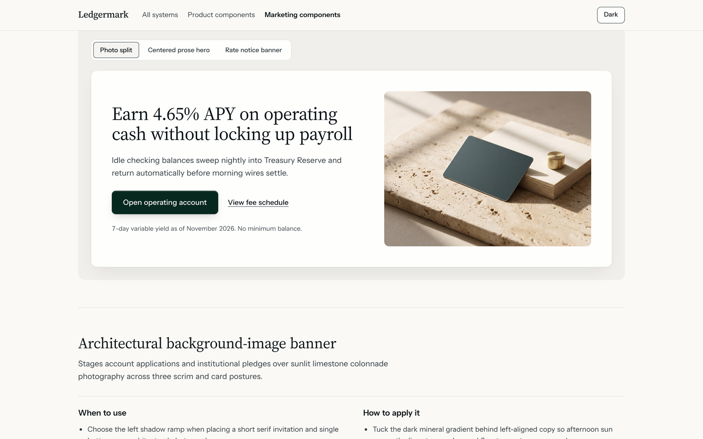
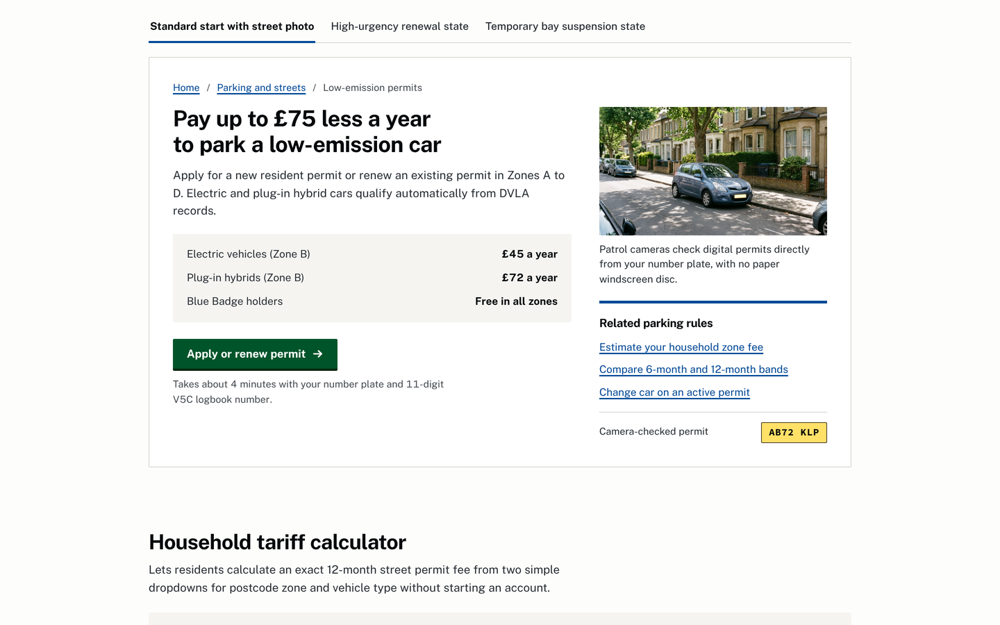
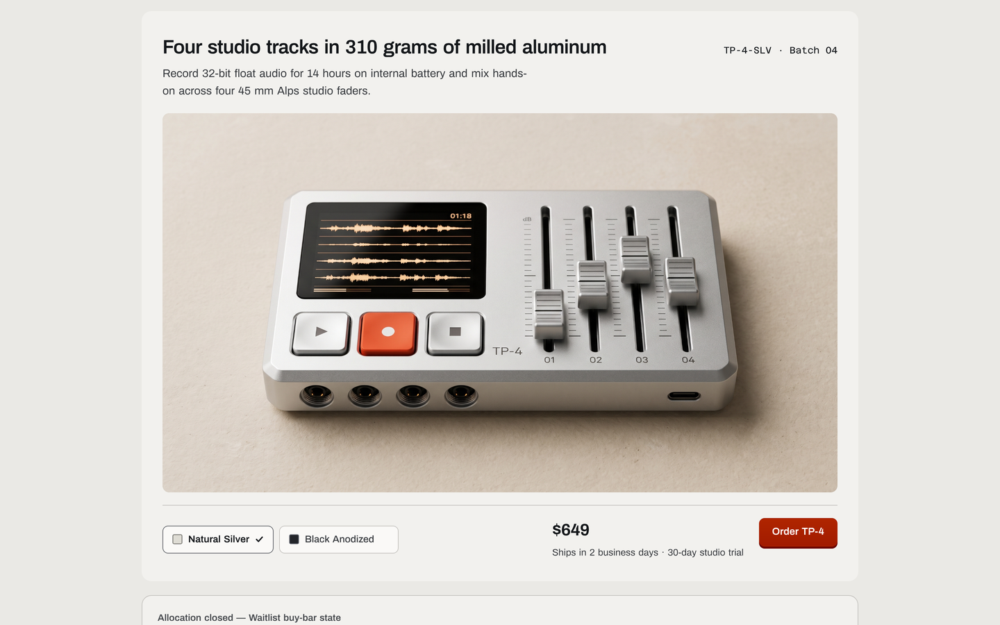
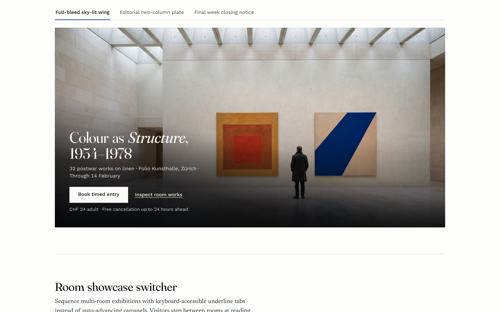
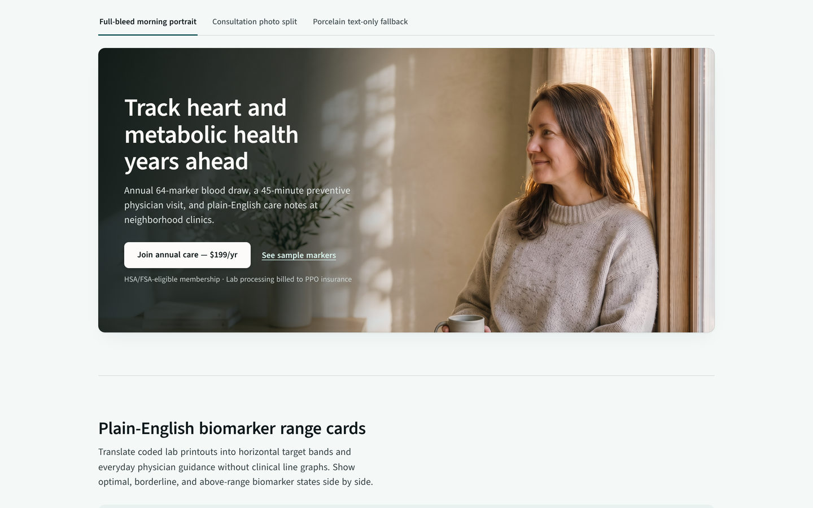

Switchyard
Documents bare-metal rack photography, server-aisle hero washes, terminal install lines, seat pricing tiers, and repository signup validation.
We built six marketing and media component guides so public pages share the same typography and palette as each product.
Each guide documents photography ratios, inward portrait direction, background-image contrast ramps, pricing schedules, and signup validation across live component states.
Every guide pairs usage and framing rules with interactive light and dark specimens, loading frames, image-off fallbacks, and error states.
Documents bare-metal rack photography, server-aisle hero washes, terminal install lines, seat pricing tiers, and repository signup validation.

Covers sunlit travertine still-lifes, inward executive portraits, split treasury heroes, limestone banners, fee schedules, and onboarding states.

Sets out neighbourhood street photography, permit start pages, household fee calculators, published tariff tables, and number-plate validation alerts.

Pairs angle-locked silver and black anodized hardware renders with finish switchers, macro lighting stages, bundle configurators, and waitlist states.

Frames uncropped linen paintings, gallery wing posters with lower shadow ramps, room switchers, admission tables, and lender-restricted image fallbacks.

Shows warm daylight clinician portraits gazing inward, plain-English lab range bands, membership selectors, clinic slot lookups, and privacy fallbacks.
Every guide shares the exact typography and color palette of its paired product workspace. Browse the design system skill and the Git repository on Google Depot.